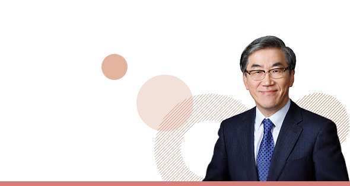

와 제 롤모델이 잡스에요!!! 아이폰 첫 출시되고 나서부터 계속 아이폰 쓰고 있는데 잡스가 너무 그리워요ㅠㅠ 지금은 돈만 벌려고 하는 것 같아서 디자인 발전도 없고ㅠㅠ와 제 롤모델이 잡스에요!!! 아이폰 첫 출시되고 나서부터 계속 아이폰 쓰고 있는데 잡스가 너무 그리워요ㅠㅠ 지금은 돈만 벌려고 하는 것 같아서 디자인 발전도 없고ㅠㅠ와 제 롤모델이 잡스에요!!! 아이폰 첫 출시되고 나서부터 계속 아이폰 쓰고 있는데 잡스가 너무 그리워요ㅠㅠ 지금은 돈만 벌려고 하는 것 같아서 디자인 발전도 없고ㅠㅠ와 제 롤모델이 잡스에요!!! 아이폰 첫 출시되고 나서부터 계속 아이폰 쓰고 있는데 잡스가 너무 그리워요ㅠㅠ 지금은 돈만 벌려고 하는 것 같아서 디자인 발전도 없고ㅠㅠ와 제 롤모델이 잡스에요!!! 아이폰 첫 출시되고 나서부터 계속 아이폰 쓰고 있는데 잡스가 너무 그리워요ㅠㅠ 지금은 돈만 벌려고 하는 것 같아서 디자인 발전도 없고ㅠㅠ
CEO 메세지
CEO Message

사랑하는 임직원 여러분!
우선 금년 여름 기록적인 무더위에도 불철주야 육상에서, 해상에서 수고하신 우리 임직원 여러분 모두의 노고에 깊은 감사를 드립니다.
특히 전 세계적으로 태풍 등 이상 기후로 인한 재난이 유난히 많았던 혹서기 동안 안전 항해와 유류비 절감에 혼신의 힘을 다해주신 해상직원 여러분, 수고 많으셨습니다.
끝없이 이어질 것 같던 무더위가 물러가고 서늘해진 날씨를 지켜보며 우리가 지금 헤쳐나가고 있는 시련의 끝을 그려봅니다. 끝이 보이지 않는 긴 터널 속에서 때로는 좌절감에 빠지기도 했지만, 이제 현대상선은 대형 Eco선 건조를 계기로 터널 끝에서 빛을 보기 시작했고, 우리는 이 빛을 향하여 나아가고 있습니다.
대형 Eco선 건조, 우리에겐 서광
대형 Eco선 건조는 현대상선 재건의 서광입니다. 2020년 2분기부터 인도되는 대형 Eco선은 2010년 초반 대형 Eco 선박 건조 대열에 참여하지 못하여 비경쟁적 고정비로 인해 만성적 장기 적자상태를 벗어나지 못하고 있는 현대상선으로 하여금 지속 가능한 수익을 창출할 수 있는 구조를 갖추는 데 결정적 역할을 할 것입니다.
난제는 많지만 극복 가능하다
빛이 보이기는 하지만 마지막 터널을 무사히 통과할 때까지 아직 해결해야할 난제가 산적해 있는 바, 이를 우리 모두의 하나된 노력으로 극복할 수 있다는 믿음을 함께 나누며 격려와 당부의 말씀을 전합니다. 지난 8년 동안은 매우 암울한 시기를 헤쳐나오는 시간이었습니다. 선박 대형화를 앞세운 공세로 동서항로 운임은 반토막이 났고, 유수의 글로벌 선사들이 역사의 뒤안길로 자취를 감추었습니다.
2년 전 구조조정으로 핵심자산을 잃은 현대상선의 운명은 한 치 앞조차 예측할 수 없는 상황이었습니다. 국가적 해운 위기를 겪으면서 우리는 기본으로 돌아가 고객들의 신뢰를 회복하고 전방위적으로 비용 절감에 매진한 결과, 작년에 4천억 원 이상 개선하는 성과가 있었고, 이를 바탕으로 도약의 발판을 마련할 수 있었습니다.
신조 선박 2020년 2분기부터 본격 투입
한편으로 숙원과제인 초대형 친환경 컨테이너선 신조도 착실히 진행해왔습니다. 이제 23K, 15K 신조계약이 마무리되었고, 건조된 선박들은 2020년 2분기부터 서비스에 단계적으로 투입될 것입니다. 신조 선박 20척은 향후 20년 이상 우리 회사의 대들보와 같은 존재가 될 것입니다.
해사부문에서는 그동안 축적해온 최고의 기술을 바탕으로 세계에서 가장 경쟁력 있는 선박이 될 수 있도록 모든 지혜를 모아주시기 바랍니다. 건조 중이라도 손익개선에 결정적인 도움이 되는 기술이 개발되는 경우, 적극적으로 채택하는 민첩성과 용기가 필요합니다.
글로벌 해운업계 새로운 강자될 것
더 나아가 2020년 환경규제에 선제적으로 대응함으로써 추가적인 비용 경쟁우위를 실현할 수 있을 것으로 기대합니다. Scrubber를 장착한 대형 Eco선단은 글로벌 해운업계의 새로운 강자가 될 것으로 믿어 의심치 않습니다. 이에 따라 기존 사선이나 용선의 각기 다른 여건 속에서도 가능하면 많은 선박이 2020년 환경규제 하에서 비용 경쟁력을 갖출 수 있도록 해야 하겠습니다.
컨테이너 영업에서는 체계적인 마케팅을 강화하여 제고된 경쟁력이 낭비되는 일이 없도록 면밀히 준비해주시고, 현재 추진하고 있는 Micro Yield Management가 정착되어 손익개선에 이바지할 수 있도록 최선을 다해주시기 바랍니다. Wet Bulk 부문에서 현재 건조 중인 5척의 VLCC 신조선도 Eco type으로 Scrubber를 장착하여 2019년 1분기 취항을 앞두고 안정적인 수익기반을 바탕으로 한 전략들이 추진되고 있습니다. 장기적으로 VLCC선대는 약세 시장에서도 수익성 개선에 크게 기여할 것으로 예상되는 바, 차질 없이 준비해주시기 바랍니다.
글로벌 네트워크 강화 필수
Dry Bulk 부문은 기존 용선선의 잔여기간 동안 선박별 효율적인 운영에 최선을 다해주시고, 한편으로 신조의 가능성을 지속적으로 추구해 주시기 바랍니다.
한편, 경쟁력 있는 선대 구축 외에 주요 터미널 지분 확보에도 적극 참여하고 있습니다. 지난해 스페인 TTIA를 인수하였고, 올해 하반기 부산 HPNT의 인수가 마무리되면 미주 한국 대만 지중해 구주를 연결하는 글로벌 터미널 네트워크가 완성될 것입니다. 기기 측면에서 2020년 선박 대형화와 더불어 향후 상당한 기기 발주가 예상되는 바, 치밀하게 준비하여주시기 바랍니다.
이와 같이 선복이 두 배로 증가되고 이에 따른 운영 Capacity도 배증되는 2020년에는 이를 뒷받침할 IT 역량과 인재 확보 및 양성 그리고 이를 바탕으로 하는 Global Network의 강화가 필수적입니다.
새로운 차세대 IT 시스템으로 거듭나야
우선 2020년까지 계획되어 있는 IT Upgrade 목표를 차질 없이 추진해나가야 하겠습니다. 새롭게 채택한 클라우드 기반의 인프라 위에 글로벌 프로세스를 표준화 시킴으로써 효율적인 통제가 가능한 관리 환경을 만들어야 합니다. 이렇게 함으로써 우리의 새로운 IT 시스템은 2020년 선단 대형화는 물론, 그 이후의 지속적인 성장과 다양한 고객들의 Needs를 만족시켜줄 수 있는 새로운 차세대 시스템으로 거듭나게 될 것입니다.
더불어, 물량이 늘어나는 지역을 중심으로 영업 및 운영 관련 인재를 확보, 조직을 보강하고 지속적으로 교육함으로써 향후 Global Coverage 확장에 선제적으로 준비해나아가야 하겠습니다.
사랑하는 현대상선 가족 여러분, 커다란 변혁의 전환점이 될 2020년이 성큼 다가오고 있습니다. 글로벌 톱클래스 해운선사로 거듭날 수 있는 천재일우의 기회이자 생존과 소멸의 갈림길이 될 절체절명의 시점이라 여겨집니다. ‘한번 해보자’는 도전의식과 ‘될 수 있다’는 자신감을 굳이 숨기고 싶지 않습니다.
과거에도 여러분께 이와 비슷한 격려의 글을 드린 기억이 있습니다. 그러나 현재 상황이 과거와 다른 것은 2020년을 준비하면서 막연히 외부환경의 호전, 즉 운임상승, 유가하락 등을 기다리기보다는 적기 투자를 통한 원천 경쟁력을 확보함으로써 어떤 환경에서도 경쟁에서 승리할 확률이 높아졌다는 점입니다.
여러분도 아시다시피, 2020년까지 가는 길은 순탄치 않습니다. 당장 금년 초부터 우리를 괴롭히는 고유가 그리고 이란·러시아 제재, 불확실한 관세전쟁 등 극복해야 할 난관이 산적해있습니다.
희망과 자신감으로 최선 다하자
그러나 2020년 어두운 터널을 뒤로 할 수 있다는 희망과 자신감을 갖고, 단기적으로는 손익 개선에 최선을 다해주시기를 부탁드리며, 한편으로 2020년을 향한 준비를 착실히 해주실 것을 당부드립니다.
수년간의 실적 저조로 우리 모두는 위축되었고 자존심에 상처와 아픔을 경험하였습니다. 2020년으로 가는 길목에서도 대내외적으로 상상 이상의 편견과 시기를 마주하고 있습니다.
그러나 기억하십시오. 이제 우리에게 천재일우의 기회가 주어졌으며 모두 합심하여 이 귀중한 기회를 재기의 발판으로 삼아야 한다는 사실을. 이제, 실적으로 우리의 능력을 보여줌으로써 대내외적으로 부정적 의구심을 해소해나가야 하겠습니다.
우리 모두는 한국 해운을 대표하는 국가 대표 해운인입니다. 자부심을 갖고 현대상선을 성공적으로 재건시켜 국위 선양 및 국가 발전에 이바지해야 하겠습니다. 끝으로, 여러분의 건강과 가정의 행복을 기원합니다.
2018. 10. 1
현대상선 대표이사 유창근
-
최고예요
322
-
좋아요
322
-
슬퍼요
322
-
그저 그래요
322
-
화나요
322